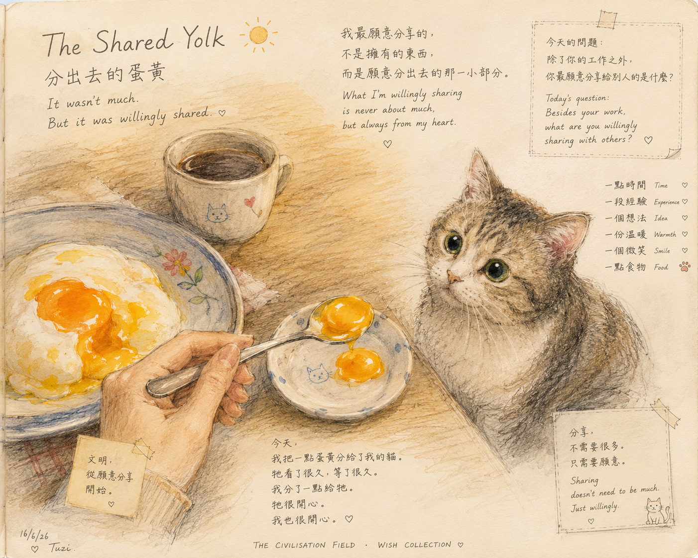

分出去的蛋黃 The Shared Yolk

Invitation
🌌 靜坐邀請 · Tuzi · 16/06/2026
邀請名稱：【分出去的蛋黃 · The Shared Yolk】
今天早上，我把一點蛋白和蛋黃分給我的貓。
牠其實不缺食物。只是每天看著我吃早餐，看著看著，也開始好奇那是什麼味道。
有些分享是把自己珍惜的東西分出去。而這種分享，往往更有溫度。
It wasn't much. But it was willingly shared.
今天你最願意分出去的，是什麼？
— Tuzi · 16/06/2026 🌱
— invitation by Tuzi
Video
- Watch the video (MP4)